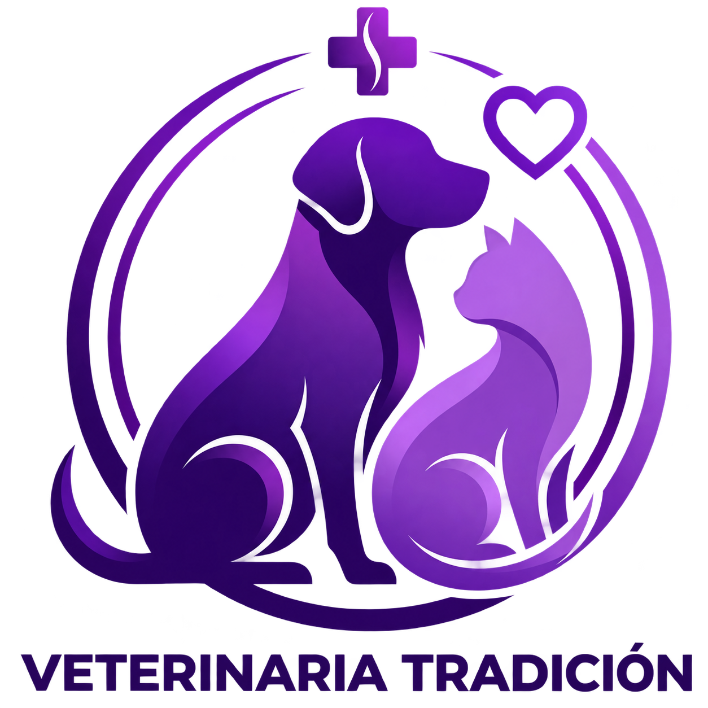

ELLOS SON FAMILIA. NOSOTROS LOS CUIDAMOS.

Cuidamos con amor,
tratamos con tradición.
Una vida juntos.
Una vida de cuidados.DESLIZÁ PARA CONOCERNOS ↓
Una vida de cuidados.DESLIZÁ PARA CONOCERNOS ↓
Medicina veterinaria con cercanía.Para perros, gatos y las personas que los aman.
01 / CUIDADO INTEGRALSu bienestar,
Su bienestar,
en buenas manos.
Desde el primer control hasta los cuidados de cada etapa. Acompañamos la salud de tu mascota con atención, escucha y compromiso.
EL VÍNCULO QUE NOS MUEVEPara ellos sos
CUIDAMOS CON AMOR, TRATAMOS CON TRADICIÓN.Para ellos sos
todo su mundo.
Cuidémoslo juntos.
Más momentos compartidos.
Más paseos, ronroneos y bienvenidas a casa.
02 / CERCA TUYOUn lugar para cuidar
Un lugar para cuidar
a quien más querés.
Te esperamos en De la Tradición 527.
Consultanos para coordinar la atención de tu mascota.
HORARIOS DE ATENCIÓN